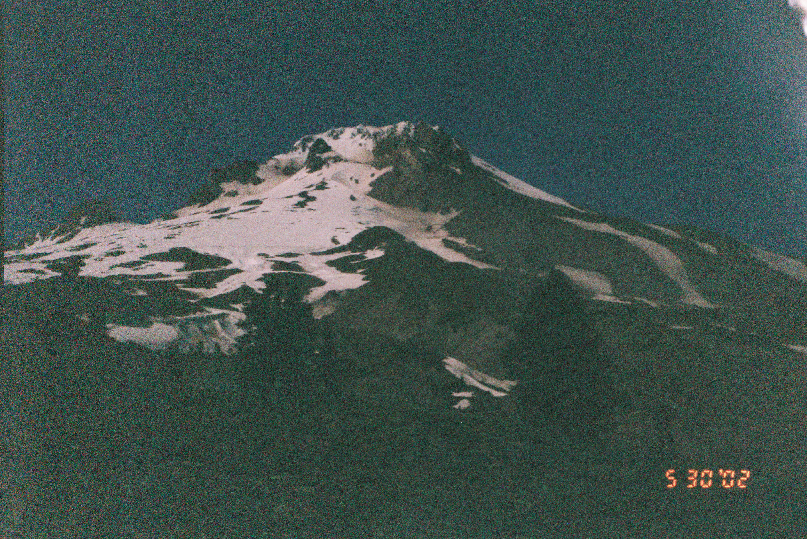
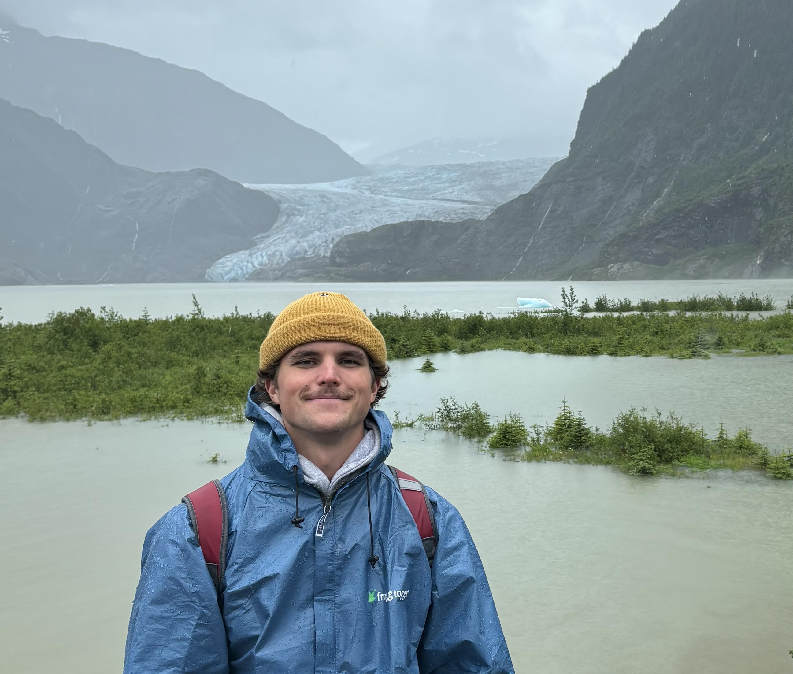

I'm currently a student at Brigham Young University studying sociology with a minor in business. I’m fascinated by the "human engine" behind successful ventures—exploring how collaborative strategy, organizational culture, and personal connection drive meaningful growth.
Originally from San Diego and now living in Utah, I spend as much time outdoors as possible surfing, skiing, mountain biking, and skateboarding. I'm also deeply passionate about music, live concerts, and film photography—in fact, the mountain background on this site is a shot I took on 35mm film.
Up8 · Provo, UT
Spearheading product strategy for a single-tap sneaker registration feature connecting physical footwear directly to an iOS app. I author Product Requirements Documents (PRDs) and Jira Epics, balancing hardware constraints and manufacturing viability with a seamless digital user experience.
Trader Joe's · Orem, UT & San Diego, CA
Working in a fast-paced retail environment where customer connection and brand standards are everything. I deliver high-touch service to 50+ guests per shift, manage inventory and logistics, and mentor 10+ new hires on consumer-facing communication to keep store culture strong.
Good Game Collective · Salt Lake City, UT
Mapped a $46B youth sports TAM across 35+ segments to isolate 18 prime growth opportunities. I ran outreach to parents, rinks, and extreme sports orgs—generating $60,000+ in revenue, 100+ camp leads, and identifying 30+ acquisition targets across skate, snow, MTB, and surf markets.
Up8 · Provo, UT
Partnered directly with the CEO on growth marketing and investor relations in an early-stage startup setting. Conducted market research on 20+ strategic firms to secure retail expansion partners and coordinated monthly company-wide meetings across five departments.
White Bison Well-Being · Provo, UT
Facilitated weekly alignment meetings with key organizational sponsors. Co-authored a 50-page wellness guide to streamline client health education and foster transparent executive communication.
Joshua's Pest Control · San Diego, CA
Interacted directly with clients over the phone to explain service packages, tailored solutions for homeowners, utilized CRM tools to organize accounts, and collaborated closely with sales and field technician teams.
The Church of Jesus Christ of Latter-day Saints
Spent two years serving communities across various regions of Jamaica and the Bahamas. I had the privilege of supporting, training, and overseeing 70+ church missionaries while building meaningful connections with local communities.
Boy Scouts of America · San Diego, CA
Organized and executed a guardrail reconstruction project for a local church, managing materials purchasing, logistics, and leading 20+ volunteers through planning and final installation.
A dedicated enthusiast of live music and indie/alternative genres, with a particular appreciation for artists like Dominic Fike and Malcolm Todd. I have attended over 30 concerts nationwide, including three attendances at the Kilby Block Party in Salt Lake City and the New York Governor's Ball.
Active in outdoor sports, including surfing in Costa Rica, swimming with sharks in Hawaii and California, and skiing throughout Utah mountain ranges. Former varsity track and field athlete and high school surf and basketball team member.